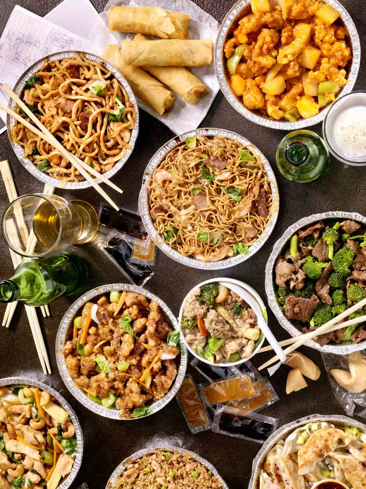
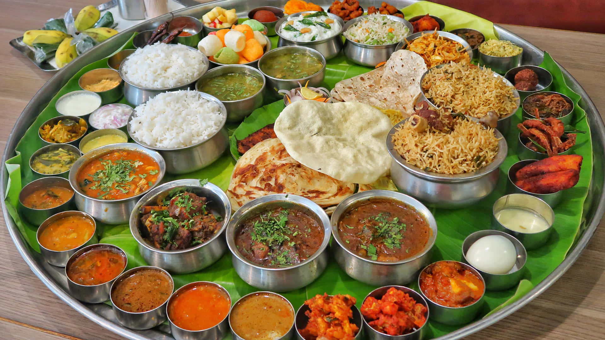

Cuisines around the world
1. China

Chinese food is famous all around the world.It consists of Noodle which we also call as chowmein.Manchurian balls are
very famous in India
2. India

India has a lot of masalas.It has many foods like naan , roti ,rice , dal etc.
3.France
France has a sophisticated and refined cuisine.It is known for its unique blend of flavors that influnce other cuisines
around the world.